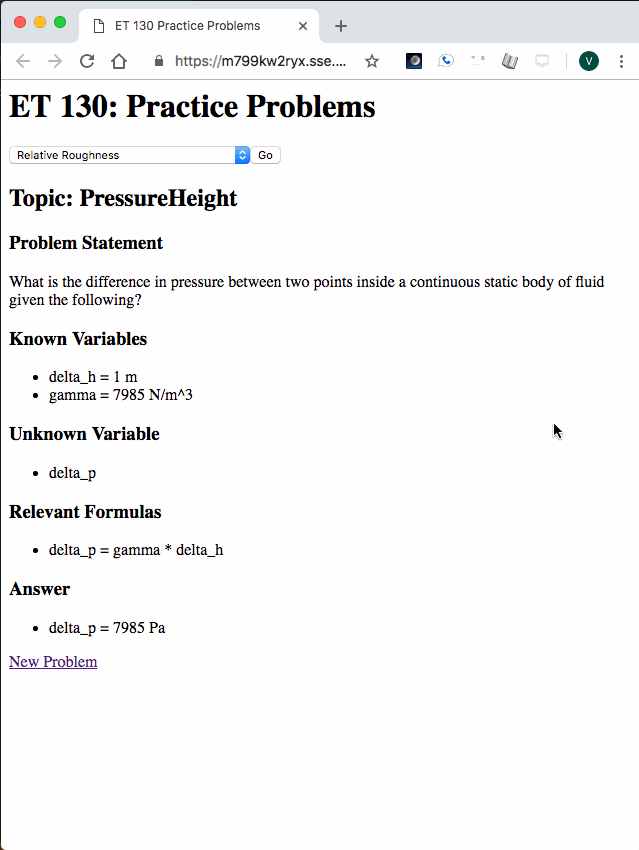
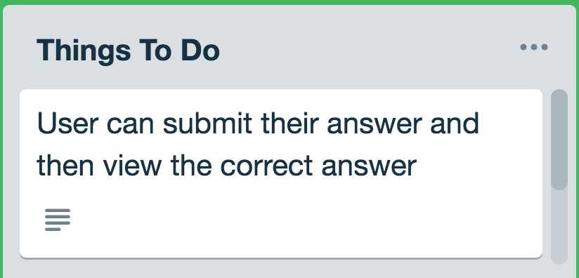

Project Journal: January 22, 2019
I made some modest but significant progress today on my Four Week Versions, working only on one project (et130webapp).
More on that in a bit, but first, I want to acknowedge the rich, engaging and just fun to read book series You Don't Know JavaScript. I finished reading the first book "up & going" this morning, and was able to digest a couple of chapters in the second book "Scope & Closures". Kyle Simpson has an outrageously enjoyable narrative of the compilation/execution of JS code where he presents the Engine, Scope and Compiler as characters engaged in dialogue. I have not yet read technical literature written in that fashion, and I am going to reconsider how I present topics to my own students. Perhaps it's my affinity for fables/storytelling, but it was a thrill to unpack the meaning of each dialogue when presented in a casual tone.
Chipping away at the minimum
One reason I focused on the et130webapp today was that I hadn't worked on it as I was finishing up the Two Week Versions of the ThoughtBoard and FeelsTracker. The other reason was that I was a bit ambiguous on which next action to take on the other two projects, as I noticed that over the past few days, I have rushed toward tackling the most challenging version of the next feature, instead of the most approachable, simple and logical version which will eventually be generalized.
Since I have a better grasp on the et130webapp, I was able to plan out smaller, more structured chunks for the Four Week Version. I figured that after I have completed a very small, structured task today, I will be in the right mindset to apply the same perspective and execute similar smaller, structured tasks for the other two projects tomorrow.
User selected topic
Initially, my server.js contained some logic which would randomly select one of the 10 available topics for the user, and then
render its practice problems.
// inside of app.route('/').get(...)
let topics = // array of topic strings
let topicSelector = Math.floor(Math.random() * (topics.length + 1));
let randomTopic = topics[topicSelector];
// topic Modules export a function (with the same name as the topic)
// that generates an answer and a function `getProblem` that
// generates the problem object
let topicFunction = require("./" + randomTopic)[randomTopic];
let getProblem = require("./" + randomTopic).getProblem;
I updated that today, allowing the student to select the topic they wanted to practice from a dropdown, which
gets sent in a GET request from the form.
For now, as everything is stored locally, I check to see if the user selected a new topic, and if so, use the
appropriate functions to generate answers and problems. I initialized the userSelectedTopic
as ShearStress to be the default for when the page first renders.
let userSelectedTopic = 'ShearStress';
// inside app.route(...).get(...) //
if (req.query.topic && userSelectedTopic !== req.query.topic) {
userSelectedTopic = req.query.topic;
}
let topicModule = require("./" + userSelectedTopic);
let topicFunction = topicModule[userSelectedTopic];
let getProblem = topicModule.getProblem;

The next task will be to write a test for this functionality (as well as the random functionality), and once they pass, move on to the next task, which is:
